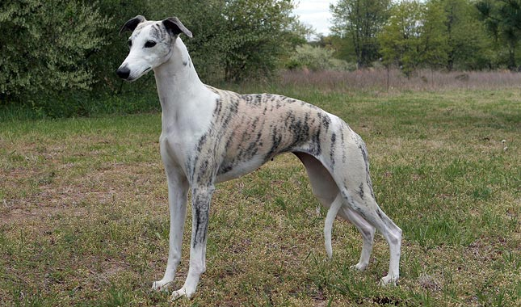
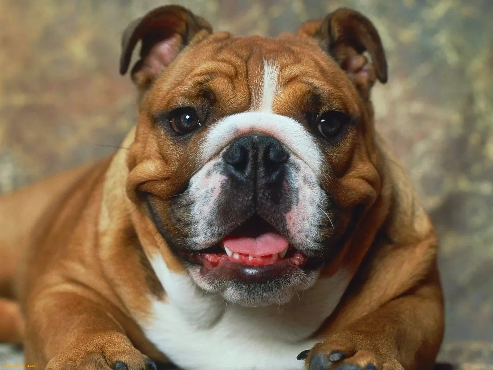

Call (04) 0220 4808 l info@hornsbypetshelter.com.au
Dogs for Adoption
Unconditional love. Devoted companionship. Constant entertainment. Most of us dog lovers know that life is better with a dog. Dogs can be there for you when people can't. Even just looking at them makes you happier. It is no wonder that dogs are gloablly the most popular pet! There are so many different breeds of dogs which are all completely different and unique. Owning a great dane is very different from a chihuahua! This makes it possible for them to fit into a variety of different lifestyle. Though, if you're unsure whether dogs are for you, here are some tell-tale signs.
- You're an energetic and "outdoorsy" person who loves keeping active. Most dogs need a lot of stimulation, fresh air and walks so it would be best if you're happy to get out with them regularly. Though there are always dogs for those who prefer to stay inside!
- You have a backyard, easy access to parks and open spaces or live in rural areas
- You don't have long work hours or very demanding jobs. Dogs aren't solitary animals like cats and need a lot of attention.
- You have more money to spend on caring for your pet. Dogs are substantially more expensive than cats.
While shelter dogs can be thought of as aggressive or poorly trained, for many of them this is not true. Sometimes dogs in a shelter environment are extremely fearful or anxious, and these emotions will escalate into "aggressive" behavior. Fortunately, once a behavior source is identified and understood, it often can be overcome with time, training, and confidence-building activities. All of the dogs in our shelter have been tested for signs of aggression, particularly food aggression. The ones that are available for adoption have all passed a behavior test and have been identified as safe.

Benefits of owning a dog

For security reasons:
Dogs instinctively protect their family
unit and home. They can be trained to
alert or protect their owners of
intruders. Many dogs wont hesitate
to put themselves in harms way to
protect the people that they see
as family.
Shelter dogs:
These dogs haven't done anything
wrong and are deserving of a life.
While shelters across Australia do
their best they are not able to provide
safe and loving homes for all the
abandoned dogs and these animals
could be euthanised as a result.
Psychological benefits
The mental health benefits that dogs
bring has been proved by many
different scientific studies. Dogs can
help with depression, anxiety, stress
and reduce loneliness. Just petting
a dog can reduce blood pressure,
slow your heart rate, and reduce
muscle tension.
Choosing a dog
Matching the right people to the right dog is important to us at Hornsby Pet Shelter, that's why we have an adoption process. Take your time to think about what type of dog you are after, and what type of dog is right for you and your family.
Being prepared
Before getting a dog it’s important to consider what is involved in being a responsible owner and to decide whether
you’ll be able to meet all your dog’s needs throughout their lifetime. Dogs are wonderful companions but owning one
is a long-term commitment, so make sure you are ready.
- Do I want a puppy or an adult dog?
- Can I cover all the financial costs of owning a dog, beyond just the purchase price,
including food, bedding, toys and veterinary check-ups and treatment including emergencies?
- Is my home safe, secure and suitable for a dog?
- Do I have time to train and socialise a dog?
- Will I be able to provide them with enough company so they don’t get lonely or bored?
A dog that doesn’t receive enough attention is unlikely to become a social and well-behaved pet.
- Do I have time to walk and play with a dog every day?
- Am I ready to make a 15-year commitment?
- Do I want a puppy or an adult dog?
- Can I cover all the financial costs of owning a dog, beyond just the purchase price, including food, bedding, toys and veterinary check-ups and treatment including emergencies?
- Is my home safe, secure and suitable for a dog?
- Do I have time to train and socialise a dog?
- Will I be able to provide them with enough company so they don’t get lonely or bored? A dog that doesn’t receive enough attention is unlikely to become a social and well-behaved pet.
- Do I have time to walk and play with a dog every day?
- Am I ready to make a 15-year commitment?
Puppy or dog
Cost
Housing
Lifestyle
Puppy or dog??

Puppies are adorable but it is important to remember this phase doesn’t last long, and all dogs grow up very quickly. Caring for a puppy generally takes more time and effort than caring for an older dog, so if it is a puppy you are after, be prepared for extra work. If you’re not particularly looking for a puppy, there are plenty of great things about getting an older dog. Older dogs may have (at least) basic training and have grown out of those puppy habits, like the teething phase when pups chew on everything!
To help you decide between a puppy and an adult dog, ask yourself the following questions:
- Would I like a dog that is already toilet trained? Toilet training a puppy usually means taking them to a toilet area up to 10 times a day (and during the night as well) and rewarding them when they ‘go’ in the right spot. You will also probably find yourself cleaning up after the inevitable accidents during the learning phase. Older dogs often have at least some basic toilet training habits.
- Would I like a dog that already has some basic obedience skills (e.g., sits for you, can walk well on a lead)? Puppies will need to be taken to puppy classes and taught all of these skills using reward-based training. Training school is a very important part of being a responsible pet owner and while some older dogs often have basic training, they will still require some attention and guidance.
- Would I like a dog that already has basic social skills (e.g., can interact safely and politely with other dogs and people)? The first 3-17 weeks of a puppy’s life are critical for their social and behavioural development. During this time it’s important to make sure they have plenty of positive experiences with a variety of different people, places, sights and sounds, as they will influence your dog’s behaviour throughout the rest of their lives.
Cost

There are many costs involved with dog ownership; they are an expensive addition to any family.
Ask yourself, can I afford:
- All of the upfront costs of getting a dog or puppy? While vaccinations, microchipping and desexing has already been provided for our dogs, there is still a registration cost and a fee to adopt them.
- Annual council registration fees, if it is required in my area
- Good quality food for my dog throughout their lifetime?
- Routine health care (like worming)
- Obedience training classes
- Leash, collar, toys and all the other necessary equipment such as bedding
- For them to be looked after if I go away
- Veterinary treatment in case of emergency or accident, or insurance fees for if this is to occur
Housing
Carefully consider whether your home is suitable for your dog.
Ask yourself:
- If I have a yard, is it secure? Are there toys and activities to keep my dog entertained while I’m not home, so it doesn’t get bored, bark or be destructive?
- If I don’t have a yard, where will my dog be while I’m not home? If it is inside, where will it go to the toilet? Can I get home to let it outside every few hours?
- Is there safe, outdoor space or a dog park close by that I can regularly take my dog to exercise?
- If I rent my property, has my landlord given me written permission to have a dog and if so, do they have any additional requirements? What will happen if I have to move?
Lifestyle
Working hours, a busy social life and taking regular trips away from home are all factors that need to be considered before becoming a dog owner. Dogs thrive on human company and will always depend on you. It is important that your lifestyle is compatible with caring for a dog so you can meet their needs throughout their lifetime.
Ask yourself:
- Do I have time each and every day to care for a puppy or a dog?
- Will I be home in time each day to feed a dog?
- Do I have time to take my puppy or dog to ‘school’ for training and to practice every day with reward-based training throughout its life?
- Am I prepared to walk a dog at least once every day, or twice a day for an active type of dog?
- How often am I at home to keep a dog company?
- Will I have time to groom a dog or puppy regularly?
- Who will care for my dog when I’m away, either travelling or if I’m sick or injured?
Different types of dogs
Just like us, every dog has its own unique personality, but their general temperament is strongly influenced by their genetics
and early life experiences. In choosing your dog, think about what breed or type of dog will best suit your lifestyle.
- Am I looking for a calm, quiet dog that settles easily, or a more playful, active dog?
- Is a small, medium or large-sized dog best for me?
- Do I have time to groom a dog that needs frequent brushing?
- Am I aware of the particular health and welfare problems some breeds can have?
If you are interested in a particular breed of dog, be aware that different breeds are predisposed to different inherited
disorders. Dogs that have been dred for a certain look can have exaggerated features that lead to serious health issues.
These conditions can cause dogs significant pain and suffering so be sure to find out about the problems
that are known to occur in that specific breed or breed type.
- Am I looking for a calm, quiet dog that settles easily, or a more playful, active dog?
- Is a small, medium or large-sized dog best for me?
- Do I have time to groom a dog that needs frequent brushing?
- Am I aware of the particular health and welfare problems some breeds can have?
Type of dog
Inbreeding
Exaggerated features
Types of dogs

While every dog is its own unique personality, there are some general behavioural traits associated with different breed types. These traits include energy levels, how easy they are to train, if they are playful and outgoing or quiet and calm and if they are good with children and strangers. They also have different physical traits including size, general appearance and their grooming requirements.
Some general dog breeds are:
Sled dogs
These dogs were bred to pull sleds through snow. Their long fur can be quite inconvenient as it needs to be regularly
groomed. They also don't cope particularly well with the heat of Australian summers. They are more independent and can be
strong-willed, though they are friendly and gentle. When well socialised they are affectionate to others, including children.
They can be quite loud, many samoyeds for example have quite loud, high-pitched barks.
Scent hounds
Scent hounds are one of the best types of dogs as pets. They are loyal and sociable and generally enjoy the company
of people. They are make wonderful companions and therapy dogs. They are generally more patient with younger children than
other dogs. Basset hounds and beagles in particular are good with children. They have smooth and easy to care for coats with
only occasional shedding. They come in all different sizes. The cons of scent hounds are that they both bark and howl. They are
also easily distracted by almost everything and they love to eat.

Working dogs
Working dogs can make good pets as they are stimulated, well rounded and controlled. They are not suited to busy households
or smaller spaces as they have a lot of energy and function better when they have a task to do. They need a lot of physical
exercise and mental stimulation.

Sight hounds
These dogs were bred for racing and are very fast, enjoying short bursts of exercise. They have a thin coat and skin which makes
them convenient to groom, however also means that they cannot regulate their temperature very well and will need heating in winter.
They usually love to be with people.
Lapdogs
These small and light dogs were bred specifically for companionship, and are most suited to being indoor dogs. They are one of
the best options if you have a small house and may become anxious if left outside alone. Many breeds of lapdog have intense grooming requirements.
As they are specifically bred to be pets they are suited to human companionship.
Guarding dogs
They were bred to protect people and homes. They are quite intelligent, and if they are properly trained their breeding doesn't make them
aggressive or bad pets. They are usually large and physically strong breeds and need owners that are capable of controlling them. They are quiet
active and it is recommended that they get around 2 hours a day.

Hunting dogs
These dogs tend to be enthusiastic, eager to please and friendly with people. They were originally bred to retrieve game. They are usually
easy to train, and they need lots of exercise and can be quite strong.

Utility dogs
Many of these dogs were originally bred as rescue dogs, though this group also includes dogs that don't really
fit into any of the other categories.

Fox terriers
Terrier-type dogs were originally bred for chasing rats and mice on farms, so they love to chase, dig and bark.
They are often fearless towards other dogs and need lots of stimulation and exercise. They can be skilled escapers
who can squeeze through small gaps. Staffie-type dogs tend to be less independent than other terriers and often don’t
cope alone.
Inbreeding
Also called linebreeding, this refers to mating animals that have multiple family members in common. This is commonly used in pedigree dogs to create a certain appearance or to enhance personality traits. As this reduces the genetic pool, it increases the chance of inherited disorders and can negatively impact the immune system of a dog. This is not as much of a worry if you are adopting from a shelter, though some dogs are still affected by inbreeding.
Each dog breed is predisposed towards their own list of inherited disorders as a result of inbreeding and selective breeding practices. In some cases these health problems occur early on in a dog’s life, while in other cases problems may not be apparent until the dog gets older.


Exaggerated physical features

Exaggerated features are extreme physical features (deformities) which cause suffering and a poor quality of life. These features have arisen through deliberate selective breeding in order to conform to a pedigree ‘breed standard’. There are many different types of exaggerated features that cause suffering including:
Excessive skin folds
The most common breed of dog that is impacted by excessive skin folds or wrinkles are pugs. They can cause
serious skin and eye problems as the skin between the folds easily become infected if not cleaned regularly
and thoroughly. The skin is also prone to inflammation. Excessive skin folds near the eyes can cause entropion -
where eyelids roll inwards causing pain and loss of visibility.

Large heads
Dogs that have been bred to have larger heads, such as bulldogs, pugs and boston terriers, cause severe birthing
difficulties. This means that some of these dogs will have lifelong deformities.
Small heads
Any breeds with abnormally small or flat heads could potentially have several different conditions because of their breeding.
One of the most painful of these conditions is syringomyelia, where the dogs skull is too small for its brain. This can cause
the dog to be in almost constant pain and is difficult to treat.

Abnormal body proportions
These can cause several spinal problems which result in pain and difficulties moving. The dachshund, corgi and basset hound all
have abnormal cartilage which causes their short legs. This cartilage can cause intervertebral disc disease which is quite a common problem
in these breeds. These problems frequently cause paralysis and major surgery can lead to death.

Extremely flat faces
cause serious breathing and eye problems. Brachycephalic breeds such as the Pug, British Bulldog,
French Bulldogs and Pekingese, suffer because they have a reduced muzzle length, but the amount of
soft tissue in their airways is not reduced, resulting in the same amount of tissue being squeezed
into a smaller area. This tissue obstructs airflow and causes major welfare problems. They are also
prone to several eye conditions that tend to lead to chronic irritation and pain. This is because the
flatter the face, the shallower the eye socket and the more prominent the eye. Prominent bulging eyes are
at greater risk of injury and sometimes they actually pop out of their socket.
Looking after a dog
Introducing your new puppy or dog to your home, friends and family is a fun and exciting time. Before you bring your new pet
home, be sure to read up on how to provide the best care for your new four-legged friend.
- Do I have a clean, comfortable, safe and secure home?
- Do I have food, bedding, dog toys and walking equipment?
- Have I organised where I will take my dog for training and to learn how to make friends?
- Have I located a veterinary clinic?
- Do I know about desexing, microchipping and registration requirements, vaccinations and
preventative health care (such as worming, flea and tick prevention)?
This is the start of a happy friendship for both of you, so with the right research you can look forward to
years of companionship together. Looking after your dog or puppy properly will give it the best life possible, reducing the
chance that it will develop conditions such as heart disease and improving its behaviour and attitude.
- Do I have a clean, comfortable, safe and secure home?
- Do I have food, bedding, dog toys and walking equipment?
- Have I organised where I will take my dog for training and to learn how to make friends?
- Have I located a veterinary clinic?
- Do I know about desexing, microchipping and registration requirements, vaccinations and preventative health care (such as worming, flea and tick prevention)?
Housing
Exercise
Behaviour and training
Health
Housing

If your dog will be spending most of its time indoors, they will need a comfortable place to sleep. If your dog will be left on its own at times, start training it to be comfortable alone early on. Gradually increase the amount of time it is left and combine this with daily exercise, things to do and toys to play with (e.g., toys filled with dog food treats, a sandpit, and other safe dog toys to entertain them while you’re out).
Exercise

All dogs need consistent and regular exercise to ensure that they stay healthy and happy. As with people, the amount of exercise that is needed varies and is dependent on age, health, and breed. When picking a breed make sure you research their exercise requirements for all stages of their life. There are many different ways to exercise your dogs including:
- Take them on a hike
- Take them with you when you go cycling (not appropriate for all dogs including puppies)
- When you go skating
- Take them swimming
- Play fetch with them
- Obedience training
- Get them to run up and down stairs (make sure not to push them too hard especially with smaller breeds who could sprain their back)
- Treadmill (with enough training dogs can come to love treadmill, especially high energy breeds)
- Play tug-of-war
- Take them on a walk
- Simply take them to a dog park and let them socialise and run around
Behaviour and training

Training and socialising your dog (that is, introducing it to other dogs and people) is essential to ensure your puppy or dog has the skills it will need throughout their life.
Socialisation
The first 3-17 weeks of a puppy’s life are critical for its social and behavioural development. During this time it is very important to provide it with positive experiences with a variety of people, places, sights and sounds. Experiences during this period can influence a dog’s behaviour throughout its life. Hornsby Pet Shelter highly recommends enrolling your puppy in puppy school classes (or dog in dog school if they need training). Even after this point it is still important that your dog interacts with others.
Training
The RSPCA recommends reward-based positive reinforcement training as it is the most humane and effective way to train dogs, is enjoyable for the dog, and positively enhances the relationship bond between you and your dog. This training method sets the dog up to succeed and then rewards them for performing the ‘good’ behaviour (positive reinforcement). Rewards can be in the form of a dog food treat, favourite toy, a nice pat, or verbal praise in a pleasant tone of voice, “good dog”.
By rewarding ‘good’ behaviour, you reinforce it and this helps make it very likely the dog will do it again, to earn more praise (or another treat!). Reward-based training does not involve punishment, force, or the assertion of dominance over the dog. Reward-based training also involves generally ignoring and not rewarding any ‘unwanted’ behaviour. If dogs are not rewarded or given attention for undesirable behaviours, they will usually stop as there is no incentive to continue.
For example: imagine a dog that jumps up to greet people –that may be OK for the owners but rather intimidating when they’re out in public or if there are visitors in their home. The owners have tried pushing the dog down and kneeing her to knock her off balance when she jumps. This has not worked, the dog seems to think it’s a game and in fact, she now jumps from further away to avoid the knee. Hornsby Pet Shelter does not recommend this kind of training and encourages dog owners to adopt reward-based training as a much more successful and humane technique.
Reward-based training involves the following actions:
- Firstly the dog should be completely ignored if she jumps – don’t speak to her, don’t touch her and don’t make eye contact. She should only receive attention (including eye contact) when she has four paws on the ground. The moment four paws hit the ground – she should be rewarded.
- The dog will most likely jump again with a little less effort – and again reward her as soon as those four paws hit the floor.
- Soon the dog will discover that it is not the jumping up that is being rewarded with attention, it is the ‘four paws on the ground’, and she will start to volunteer the behaviour that the owners want - four paws on the ground.
- Only when she is standing or sitting should she be rewarded with attention and treats.
Health

Providing veterinary care when needed is an essential part of being a responsible dog owner. Your vet can advise you on annual health checks, vaccination schedules, microchipping, registration, preventative health care (external and internal parasite prevention), behaviour and desexing.
Feeding
First and foremost, talk to your vet for dietary advice. Dogs should be fed a high-quality, nutritionally balanced commercial dog food that’s appropriate for their life stage (puppy, adult) and health status. Check products comply with the Australian Standard: Manufacturing and Marketing Pet Food AS 5812:2011. Dogs may also be offered raw meaty bones occasionally to provide some variety and to help keep teeth and gums healthy. Bones must always be raw and human-grade. They can also be fed other meats and foods to add variety to their diet.
Grooming
Many dogs need regular grooming for their health, particularly long-haired dogs. In order to make grooming an enjoyable bonding experience that forms part of your dog’s routine, it’s best to establish this habit early in your dog's life. Associate grooming with a positive experience by rewarding calm behaviour with tasty dog food treats. If you wash your own dog, be sure to use products specifically designed for dogs. Some types of dog may need regular hair clipping and professional grooming to manage their coat. Talk to your vet for advice.
Meet the dogs
Find your purr-fect friend today! All of the dogs that are available have been micro-chipped, desexed, are up to date with vaccinations, worming and flea treatments and have undergone a behavior assessment. These caring and hopeful pets are prepared to find a new family!
Meela

.jpg)
Animal ID 480104
| Breed | Staffordshire Bull Terrier |
|---|---|
| Age | 7 years and 3 months |
| Sex | Female |
| Size | Medium |
| Colour | Brindle/white |
For more info click here...
Hey there, my name is Meela, it's lovely to meet you. I'm a friendly and playful girl looking for an experienced owner to take me under their wing.This is my second time back at the shelter, I was previously adopted but unfortunately I was not suited to that home. I'm now ready for a fresh start, maybe with you?I must be the only dog in your home as I love all the attention and don't like other dogs in my face. I love to get out for daily walks and sniff around so I am looking for an owner who likes to get out & about as well. I will not suit going to doggy high-traffic areas like the beach or dog park, instead a bush walk would be way more fun, imagine all the things to smell & see. I would be best in a home without children as I'm not really sure what those little people are. I like the peace and quiet of a quiet/calm household. I love to play fetch, already know how to sit & shake hands and am eager to learn lots more with you!
Nina

Animal ID 499679
| Breed | Rhodesian Ridgeback / Staffordshire Bull Terrier |
|---|---|
| Age | 5 years and 5 months |
| Sex | Female |
| Size | Medium |
| Colour | Black/white |
For more info click here...
Hi there, I'm Nina! I don't live at the shelter at the moment, so if you would like to meet me, please call ahead to arrange a time with the staff! When I first came to the shelter with my puppies it was a little overwhelming. I hadn't really ever spent quality time with people before, so it was a pleasant surprise to have kind people attending to my every need. I was a little bit skinny, so I was sent out to a foster home with people who treat me as kindly as they would their own dog, and I love it here! Now I'm a tad chubby but that's ok for now. My foster parents let me inside, take me for walks, they talk to me kindly all the time and pat me gently when ever I am near them. I'm really looking for a real home that can offer me the same kind of love that my foster parents have. Somewhere warm and safe, with a family who treat me with love for the rest of my life. I will need to meet the whole family, especially any kids. I probably could live with another dog, although I would prefer someone sensible and quiet, but I'm kind of loving having a family all to myself too.
Gloria

Animal ID: 495356
| Breed | Staffordshire Bull Terrier |
|---|---|
| Age | 5 years and 7 months |
| Sex | Female |
| Size | Medium |
| Colour | Black Brindle |
For more info click here...
Hello everyone, my name is Gloria!I took myself for a walk one day to find a good place to have my puppies, thankfully, a kind person found me and all my babies and brought me to the shelter. The staff here at the shelter have been helping me practice my manners and I know and respond to basic cues such as 'sit'. I'm already very well mannered but continuing my training in my new home will not only help me further develop my skills but is also a great way to help me settle in my new environment and help build the bond between be and my new family. I haven't had much exposure to younger children and honestly, they make me a bit nervous. So I think I would prefer to go to a home with children over the age of 12 years who can understand that I need my own space every now and then. I feel the same about other dogs, I have met a few while in care and whilst I'm ok to be walked near another dog, I don't like having them come up to me and invade my personal space, so the staff here think I would be best suited as an only dog and avoid being taken to any off-leash dog parks or high-traffic dog areas so I don't become overwhelmed. If you think I sound like the perfect match for you and your family, please do not hesitate to bring all household members to the shelter with you and say hello. I can't wait to meet you all!
Sydney
.jpg)
Animal ID: 495356
| Breed | Bull Arab |
|---|---|
| Age | 4 years and 2 months |
| Sex | Female |
| Size | Medium |
| Colour | Brown Brindle/white |
For more info click here...
Sydney is a happy, affectionate girl who's tail never stops wagging! She can be anxious and stressed in new environments, so it is recommended that her new owners be home for the first couple of days to help her settle in. She is best suited to a home with structure and routine and an owner who can set her up to succeed. Sydney is quite smart and knows some of her basic cues already, like sit, drop, stay etc. She would love to learn some more tricks and further her training. She can be a little protective of her food so work on trade out techniques if you need to take her bowl/bone etc and work on hand feeding her to build a positive association with food, particularly dry food. She will need to be fed separately if she is to live with another dog. Sydney is looking for an active family who can provide her with plenty of mental stimulation as well as physical. Just running her daily won't satisfy her. She needs someone who will work her and train her and maybe even take her to dog sports. She may be best as your only dog or if she is to live with another dog will need a thorough meet before going home. She is not suited to visiting dog parks or off lead areas. If you think she might be the perfect fit for your family, please fill out an adoption application!
Honey
.jpg)
Animal ID: 21082
| Breed | Medium Cross Breed |
|---|---|
| Age | 2 years and 10 months |
| Sex | Female |
| Size | Unknown |
| Colour | Brindle |
For more info click here...
Well hi i'm Honey.I'm a sweet girl with a lot of love to give, I was brought to the shelter through no fault of my own and now I'm waiting to find a new home!I am very friendly with everyone I meet including children, cats and other dogs.I need a good sized yard to play in during the day and love to go on short walks for exercise.I am very smart and easy to train, as long as you have treats and time for me I can learn to do almost anything! The humans here have been very impressed with my training and would recommend taking me to classes if you want to get the very best out of me.
Tiny
.jpg)
Animal ID: 499558
| Breed | Great Dane |
|---|---|
| Age | 3 years and 3 months |
| Sex | Male |
| Size | Extra Large |
| Colour | Black/white |
For more info click here...
Hello there, my name is Tiny! I am the opposite of what my name suggests, the staff here didn't think that "big scruffy long legs" would roll off the tongue very well! I'm hanging out here at the shelter while I await my new home. My ideal new home will be one where I will be your only pet and best friend forever. I am in need of an experienced owner, without children, and one who has owned a large breed like me before. My exact breed is unknown but I am showing traits of a hound such as a staghound/wolfhound type. I forget my size sometimes, I like to pull during walks so I have been walked using a balance harness while at the shelter. I have met other dogs while at the shelter and they are pretty exciting creatures aren't they?! I will need a home where there are no other dogs please. I love to play with toys and I cannot wait to play together in my new, fully enclosed large yard. If I sound like the dog for you, please come meet me!
Chika
Animal ID: 505232
| Breed | Mastiff |
|---|---|
| Age | 9 months |
| Sex | Female |
| Size | Medium |
| Colour | Brindle |
For more info click here...
Hey there! I'm Chika. I came to the shelter when I was very scared and skinny and the staff have been working hard with me to help me get happy and healthy... as you can see, I sure am now! I still get worried about new things, and because I haven't had a lot of experience in the world, that means lots of things can worry me at first, but the more I learn the better I get and once I know you I'm very sweet. I've been spending some time in foster care with a lovely family who have been helping me learn about life with a family. Now I love the car and walks with my people and life is not scary after all! I'll still need a quiet adults only home with people that have owned dogs before and can understand when I'm worried and need a little extra help. I would like to be the only dog in the home. I don't mind seeing other dogs and sometimes even say hello, but I can quickly become scared so my own space would very advantageous in helping me to be comfortable in my new forever home. If you think you have what it takes to help me shine, please fill out the adoption form or get in touch!
Panda

Animal ID: 495356
| Breed | American Staffordshire Terrier |
|---|---|
| Age | 3 years and 3 months |
| Sex | Male |
| Size | Medium |
| Colour | Brindle |
For more info click here...
Hi there, I'm Panda! I'm pretty lucky to find myself here at the shelter, cause things weren't so good for me and my friends previously. But here we are, looking forward and excited about the future! I'm currently living in a foster home to get me some life experience and I have to say, this home life is awesome! It does mean that you will need to ring and make an appointment to meet me though so I can be at the shelter when you want to come! My foster says that I am a beautiful boy who is so trusting of everyone. I love to sniff EVERYTHING and explore as much as I can. I love my people and will follow you around if that's possible. I can be a bit jumpy, but I have just learnt to sit and wait. I am good on lead and quite social with other dogs but I prefer just a few friends and no one too in my face. I'm happy to just ignore them and move on too! I'm looking for a home that can be patient and teach me all they know about being a loved family dog. I'd love to come indoors ( I get some couch time in my foster home which is just so warm and comfy!) and have pats, cuddle time and sleep where its warm in my very own bed. I'm still learning about living in a home, so you will need to be patient with me, but if you are happy to put in the effort then I know I can be the bestest boy that I can be. I will need to meet and dogs or kids in the home to make sure that we can all get along for forever. Cause this is a forever deal, right?? How wonderful!If you are interested in me please
Adoption Processs
Hornsby Pet Shelter is dedicated to finding loving homes for all of our animals. To protect our staff as well as the wider community of NSW we've had to make some changes to our adoption process. If you are interested in adopting a specific animal from our shelter, please fill out the linked application form and our team will be in touch to begin the adoption process. If you are approved for adoption, you will be allocated an appointment to meet your potential new pet and to process the adoption. There is no fee for this service. Despite these changes, we assure you that our standards remain the same - finding the perfect forever home for our animals has been, and will always be, our top priority. We appreciate your understanding and patience during this time. With your help and support, we can ensure that all our animals continue to experience the love and care that they deserve.